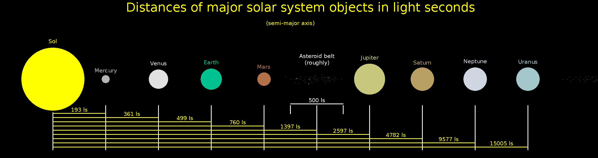

Home of humanity and other things descendant from it.
Planets and major objects

Mercury
todo
Venus
The second home of humanity. todo
Terra
The first home of humanity. todo
Mars
Mars is a uniquely unpopulated planet of the Solar system, as in the 26th century Torpensoor evicted all humans from Mars to establish a planetary scale archeological site. In the modern day Mars is known above all for the miniscule fragments of information about the ancient martian biota of which a small fraction had been recreated as living specimens through the miraculous work of artificial and posthuman superintelligence.